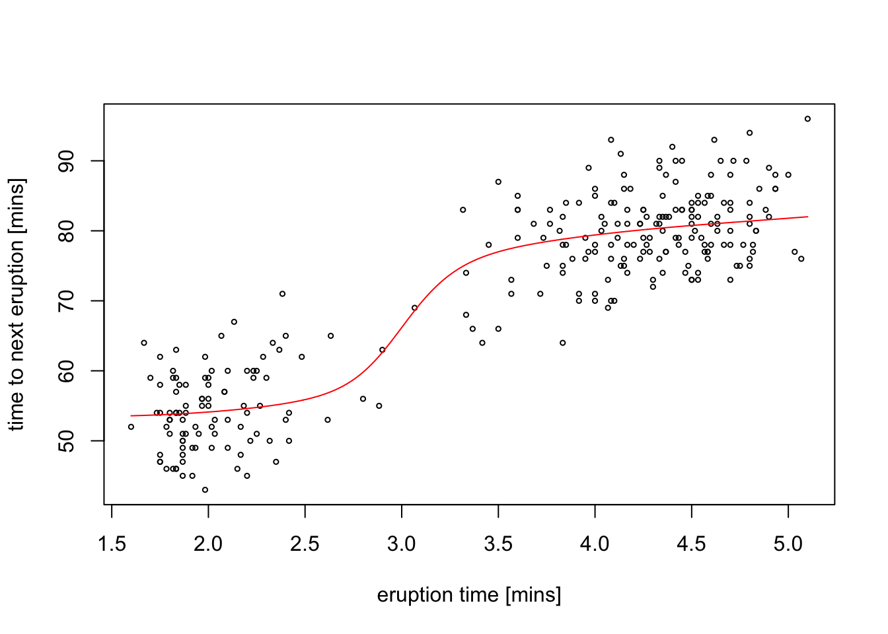
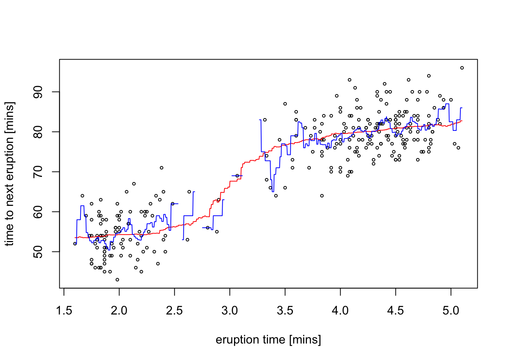

Section 4 Kernel Smoothing
We now consider the statistical model \[\begin{equation*} Y_i = m(x_i) + \varepsilon_i, \end{equation*}\] where \(m\colon \mathbb{R}\to \mathbb{R}\) is a smooth function and \(\varepsilon_i\) are independent random variables with \(\mathbb{E}(\varepsilon_i) = 0\). We are given data \((x_i, y_i)\) for \(i\in \{1, \ldots, n\}\) and our aim is to estimate the function \(m\). The task of estimating the function \(m\) from data is called smoothing.
4.1 The Nadaraya-Watson Estimator
Since we have \[\begin{equation*} \mathbb{E}(Y_i) = \mathbb{E}\bigl( m(x_i) + \varepsilon_i \bigr) = m(x_i) + \mathbb{E}( \varepsilon_i ) = m(x_i), \end{equation*}\] we could attempt to use a Monte-Carlo approach where we estimate the expectation \(\mathbb{E}(Y_i)\) using an average of many \(Y\) values. This approach is not feasible in practice, since typically we will only have a single observation \(y_i\) corresponding to a given \(x_i\). The idea of the Nadaraya-Watson Estimator is to average the \(y_i\) corresponding to nearby \(x_i\) instead. A weighted average is used, which gives less weight to further away values. This leads to the following definition.
Definition 4.1 The Nadaraya-Watson Estimator for \(m(x)\) is given by \[\begin{equation*} \hat m_h(x) = \frac{\sum_{i=1}^n K_h(x - x_i) y_i}{\sum_{j=1}^n K_h(x - x_j)}, \end{equation*}\] where \(K_h\) is a kernel scaled to bandwidth \(h\) as in definition 1.2.
The problem of finding \(m\) using kernel functions are called kernel smoothing or kernel regression. In this context, the bandwidth \(h\) is also called the smoothing parameter. The Nadaraya-Watson Estimator is not the only method for kernel smoothing. We will learn about different methods in the next sections.
Using the shorthand \[\begin{equation*} w_i(x) := \frac{K_h(x - x_i)}{\sum_{j=1}^n K_h(x - x_j)} \end{equation*}\] we can write the Nadaraya-Watson Estimator as \(\hat m_h(x) = \sum_{i=1}^n w_i(x) y_i\) and since \[\begin{align*} \sum_{i=1}^n w_i(x) &= \sum_{i=1}^n \frac{K_h(x - x_i)}{\sum_{j=1}^n K_h(x - x_j)} \\ &= \frac{\sum_{i=1}^n K_h(x - x_i)}{\sum_{j=1}^n K_h(x - x_j)} \\ &= 1, \end{align*}\] this is indeed a weighted average.
Example 4.1 The faithful dataset built into R contains 272 observations of
waiting time between eruptions and the duration of the eruption for the Old Faithful geyser in Yellowstone National Park. We can use the
ksmooth() function to compute Nadaraya-Watson estimate for the
waiting time after an eruption of a given length. Here we use
a Gaussian kernel with bandwidth 1.
x <- faithful$eruptions
y <- faithful$waiting
plot(x, y, cex = .5,
xlab = "eruption time [mins]", ylab = "time to next eruption [mins]")
lines(ksmooth(x, y, kernel = "normal", bandwidth = 1, n.points = 1000),
col = "red")
The estimate \(\hat m_h\) (red line) smoothly connects the two clusters visible in the scatter plot.
For kernels with bounded support, e.g. for the Epanechnikov kernel, the denominator \(\sum_{j=1}^n K_h(x - x_j)\) will equal zero for \(x\) which are too far away from all of the \(x_i\). For these \(x\), the weights \(w_i\) and thus also the estimate \(\hat m_h(x)\) are undefined. This problem can easily be seen in practice, when the bandwidth is chosen too small.
Example 4.2 To illustrate the problem of the estimate becoming undefined far away from the data points, we redo the previous estimate using a uniform kernel:
plot(x, y, cex = .5,
xlab = "eruption time [mins]", ylab = "time to next eruption [mins]")
lines(ksmooth(x, y, kernel = "box", bandwidth = 1, n.points = 1000),
col = "red")
lines(ksmooth(x, y, kernel = "box", bandwidth = 0.1, n.points = 1000),
col = "blue")
For \(h = 1\) (red line) we get a line \(\hat m_h\) which is less smooth than the estimate using the Gaussian kernel, but is otherwise looks similar to the previous estimate. In contrast, if we reduce the bandwidth to \(h = 0.1\) (blue line), gaps start to appear in the plot of \(\hat m_h\) where the spacing of the data points is too large.
4.2 Estimation Error
Here we will discuss how fast the estimation error decreases in the limit of \(n\to \infty\), i.e. for the case when we have a large dataset to use for the estimate. As before, we will find that we need to decrease the bandwidth \(h\) as \(n\) increases.
To allow for \(n\) to change, we will introduce a statistical model also for the inputs \(x_i\). (This is different from what we did in the level 3 part of the module for linear regression.) Here we will consider the following model:
- \(X_1, \ldots, X_n\) are independent and identically distributed with density \(f\).
- \(\eta_1, \ldots \eta_n\) are independent, with \(\mathbb{E}(\eta_i) = 0\) and \(\mathop{\mathrm{Var}}(\eta_i) = 1\).
- \(\varepsilon_i = s(X_i) \eta_i\) for all \(i \in \{1, \ldots, n\}\), where \(s\colon \mathbb{R}\to (0, \infty)\) is a smooth function.
- \(Y_i = m(X_i) + \varepsilon_i\) where \(m\colon \mathbb{R}\to \mathbb{R}\) is a smooth function.
While this extended model allows us to increase \(n\), it also creates a practical problem: the estimator \[\begin{equation*} \hat m_h(x) = \frac{\sum_{i=1}^n K_h(x - X_i) Y_i}{\sum_{j=1}^n K_h(x - X_j)}, \end{equation*}\] now has random terms both in the numerator and in the denominator. This will make it more challenging to determine the behaviour of \(\mathbb{E}\bigl( \hat m_h(x) \bigr)\) and \(\mathop{\mathrm{Var}}\bigl( \hat m_h(x) \bigr)\) as \(n \to \infty\) and \(h \downarrow 0\). We can write \(\hat m_h(x)\) as \[\begin{equation} \hat m_h(x) = \frac{\frac1n \sum_{i=1}^n K_h(x - X_i) Y_i}{\frac1n \sum_{j=1}^n K_h(x - X_j)} = \frac{\frac1n \sum_{i=1}^n K_h(x - X_i) Y_i}{\hat f_h(x)} = \frac{\hat r_h(x)}{\hat f_h(x)} \tag{4.1} \end{equation}\] where \(\hat f_h(x)\) is the kernel density estimator from Section 1 and \[\begin{equation*} \hat r_h(x) := \frac1n \sum_{i=1}^n K_h(x - X_i) Y_i. \end{equation*}\] We will consider the numerator and denominator of equation (4.1) separately
Denominator
From equations (2.6) and (2.11) we know that \[\begin{equation*} \mathbb{E}\bigl( \hat f_h(x) \bigr) \approx f(x) + \frac{\mu_2(K) f''(x)}{2} h^2 \end{equation*}\] and \[\begin{equation*} \mathop{\mathrm{Var}}\bigl( \hat f_h(x) \bigr) \approx \frac{1}{nh} f(x) R(K) \end{equation*}\] as \(h \downarrow 0\).
Numerator
We start by considering the numerator \(\hat r_h(x)\). The arguments used here will be very similar to the arguments used in Section 2.4.3 on the variance of kernel density estimates.
The expectation of \(\hat r_h(x)\) is \[\begin{align*} \mathbb{E}\bigl( \hat r_h(x) \bigr) &= \mathbb{E}\Bigl( \frac1n \sum_{i=1}^n K_h(x - X_i) Y_i \Bigr) \\ &= \frac1n \sum_{i=1}^n \mathbb{E}\bigl( K_h(x - X_i) Y_i \bigr) \\ &= \mathbb{E}\bigl( K_h(x - X) Y \bigr) \\ &= \mathbb{E}\Bigl( K_h(x - X) (m(X) + s(X)\eta) \Bigr). \end{align*}\] We use integrals to average over the randomness in \(X\) and \(\eta\), denoting the density of \(\eta\) by \(\varphi\): \[\begin{align*} \mathbb{E}\bigl( \hat r_h(x) \bigr) &= \int \int K_h(x - \xi) \bigl( m(\xi) + s(\xi) e \bigr) \, \varphi(e) \, de \, f(\xi) \, d\xi \\ &= \int K_h(x - \xi) \Bigl( m(\xi) + s(\xi) \int e \, \varphi(e) \, de \Bigr) \, f(\xi) \, d\xi \\ &= \int K_h(x - \xi) m(\xi) f(\xi) \, d\xi, \end{align*}\] since \[\begin{equation*} \int e \, \varphi(e) \, de = \mathbb{E}(\eta) = 0. \end{equation*}\] Writing \[\begin{equation*} r(x) := m(x) f(x) \end{equation*}\] as an abbreviation, we finally get \[\begin{equation*} \mathbb{E}\bigl( \hat r_h(x) \bigr) = \int K_h(x - \xi) r(\xi) \, d\xi. \end{equation*}\]
We now formalise an argument which we already used earlier.
Lemma 4.1 Let \(g\colon \mathbb{R}\to \mathbb{R}\) be two times continuously differentiable and let \(K\) be a kernel function. Then we have
- \(\displaystyle\int K_h(x - \xi) g(\xi) \, d\xi = g(x) + \frac12 \mu_2(K) g''(x) h^2 + o(h^2)\) as \(h \downarrow 0\), and
- \(\displaystyle\int K_h(x - \xi)^2 g(\xi) \, d\xi = \frac1h R(K) g(x) + o(1/h)\) as \(h \downarrow 0\).
Proof. The first statement is proved using substitution and Taylor expandion of \(r\) around \(x\) as shown in the derivation of equation (2.6). The second statement is proved similarly, as shown in the derivation of equation (2.9).
Using the first part of lemma 4.1 for \(g = r\) we get \[\begin{equation*} \mathbb{E}\bigl( \hat r_h(x) \bigr) = r(x) + \frac12 \mu_2(K) r''(x) h^2 + o(h^2). \end{equation*}\]
For the variance of \(\hat r_h(x)\) we get \[\begin{align*} \mathop{\mathrm{Var}}\bigl( \hat r_h(x) \bigr) &= \mathop{\mathrm{Var}}\Bigl( \frac1n \sum_{i=1}^n K_h(x - X_i) Y_i \Bigr) \\ &= \frac{1}{n^2} \sum_{i=1}^n \mathop{\mathrm{Var}}\bigl( K_h(x - X_i) Y_i \bigr) \\ &= \frac1n \mathop{\mathrm{Var}}\bigl( K_h(x - X) Y \bigr) \\ &= \frac1n \Bigl( \mathbb{E}\bigl( K_h(x - X)^2 Y^2 \bigr) - \mathbb{E}\bigl( K_h(x - X) Y \bigr)^2 \Bigr). \end{align*}\] We have already seen that \[\begin{equation*} \mathbb{E}\bigl( K_h(x - X) Y \bigr) = \mathbb{E}\bigl( \hat r_h(x) \bigr) = r(x) + \frac12 \mu_2(K) r''(x) h^2 + o(h^2) \end{equation*}\] and thus \[\begin{equation*} \mathbb{E}\bigl( K_h(x - X) Y \bigr)^2 = r(x)^2 + O(h^2). \end{equation*}\] Using the second part of lemma 4.1 one can show that \[\begin{align*} \mathbb{E}\bigl( K_h(x - X)^2 Y^2 \bigr) &= \int \int K_h(x - \xi)^2 \bigl( m(\xi) + s(\xi)e \bigr)^2 \,\varphi(e)\,de \,f(\xi)\,d\xi \\ &= \int K_h(x - \xi)^2 \bigl( m(\xi)^2 + s(\xi)^2 \bigr) f(\xi) \,d\xi \\ &= \frac1h R(K) \bigl( m(x)^2 + s(x)^2 \bigr) f(x) + o(1/h). \end{align*}\] Combining these equations we find \[\begin{equation*} \mathop{\mathrm{Var}}\bigl( \hat r_h(x) \bigr) \approx \frac{1}{nh} R(K) \bigl( m(x)^2 + s(x)^2 \bigr) f(x) + \frac1n r(x)^2 \end{equation*}\] as \(n\to\infty\), \(h\downarrow 0\) and \(nh\to\infty\).
Mean Squared Error
To turn our results about \(\hat r_h\) and our previous results about \(\hat f\) into an error estimate for \[\begin{equation*} \hat m_h(x) = \frac{\hat r_h(x)}{\hat f_h(x)}, \end{equation*}\] we consider Taylor expansion of the function \(g(y) = 1/y\): \[\begin{align*} g(y + h) &= g(y) + g'(y) h + o(h) \\ &= \frac1y - \frac{1}{y^2} h + o(h). \end{align*}\] Using this approximation we get \[\begin{align*} \hat m_h(x) &= \hat r_h(x) g\bigl( \hat f_h(x) \bigr) \\ &= \hat r_h(x) g\bigl( f(x) + \hat f_h(x) - f(x) \bigr) \\ &\approx \hat r_h(x) \Bigl( \frac{1}{f(x)} - \frac{1}{f(x)^2} (\hat f_h(x) - f(x)) \Bigr) \\ &= \frac{\hat r_h(x)}{f(x)} - \frac{\hat r_h(x) \bigl(\hat f_h(x) - f(x) \bigr)}{f(x)^2}. \end{align*}\] With the help of this trick, we have achieved that now all random terms are in the denominator and thus we can take expectations easily: \[\begin{align*} \mathbb{E}\bigl( \hat m_h(x) \bigr) &= \frac{\mathbb{E}\bigl( \hat r_h(x) \bigr)}{f(x)} - \frac{\mathbb{E}\Bigl( \hat r_h(x) \bigl(\hat f_h(x) - f(x) \bigr) \Bigr)}{f(x)^2} \\ &\approx \frac{\mathbb{E}\bigl( \hat r_h(x) \bigr)}{f(x)} - \frac{\mathbb{E}\bigl( \hat r_h(x) \bigr) \mathbb{E}\bigl( \hat f_h(x) - f(x) \bigr)}{f(x)^2}. \end{align*}\] Substituting in our previous results we get \[\begin{align*} \mathbb{E}\bigl( \hat m_h(x) \bigr) &\approx \frac{r(x) + \frac12 \mu_2(K) r''(x) h^2 + o(h^2)}{f(x)} - \frac{\bigl( r(x) + \frac12 \mu_2(K) r''(x) h^2 + o(h^2) \bigr) \frac12 \mu_2(K) f''(x) h^2}{f(x)^2} \\ &= \frac{r(x)}{f(x)} + \frac12 \frac{\mu_2(K) r''(x)}{f(x)} h^2 - \frac12 \frac{\mu_2(K) r(x) f''(x)}{f(x)^2} h^2 + o(h^2) \end{align*}\] Using \(r(x) = f(x) m(x)\) we find the derivative \(r'(x) = f'(x) m(x) + f(x) m'(x)\) as well as the second derivative \(r''(x) = f''(x) m(x) + 2 f'(x) m'(x) + f(x) m''(x)\). This gives \[\begin{align*} \mathbb{E}\bigl( \hat m_h(x) \bigr) &= m(x) + \frac12 \frac{\mu_2(K) r''(x)}{f(x)} h^2 - \frac12 \frac{\mu_2(x) m(x) f''(x)}{f(x)} h^2 + o(h^2) \\ &= m(x) + \frac12 \frac{\mu_2(K) \bigl(2 f'(x) m'(x) + f(x) m''(x)\bigr)}{f(x)} h^2 + o(h^2) \\ &= m(x) + \mu_2(K) \Bigl( \frac{f'(x)}{f(x)} m'(x) + \frac12 m''(x) \Bigr) h^2 + o(h^2) \end{align*}\] and \[\begin{equation*} \mathop{\mathrm{bias}}\bigl( \hat m_h(x) \bigr) = \mu_2(K) \Bigl( \frac{f'(x)}{f(x)} m'(x) + \frac12 m''(x) \Bigr) h^2 + o(h^2). \end{equation*}\]
A similar calculation gives the approximate variance as \[\begin{equation*} \mathop{\mathrm{Var}}\bigl( \hat m_h(x) \bigr) = \frac{1}{nh} \frac{\sigma^2(x) R(K)}{f(x)} + o\Bigl( \frac{1}{nh} \Bigr). \end{equation*}\] So finally we have \[\begin{align*} \mathop{\mathrm{MSE}}\nolimits\bigl( \hat m_h(x) \bigr) &= \frac{h^4 \mu_2(K)^2}{4} \Bigl(m''(x) +\frac{2m'(x) f'(x)}{f(x)} \Bigr)^2 \\ &\hskip1cm + \frac{1}{nh} \frac{\sigma^2(x) R(K)}{f(x)} + o\Bigl( \frac{1}{nh} \Bigr) + o(h^4). \end{align*}\]
Notes:
- A more careful calculation will need to take into account that \(\hat m(x)\) may be undefined. All expectations and variances are conditional on \(\hat f(x) \neq 0\). One can show that \(P\bigl( \hat f(x) \neq 0 \bigr) \to 1\) as \(n\to\infty\) for all \(x\in\mathbb{R}\) with \(f(x) > 0\), so this is not a problem.
- The MSE is of order \(O(n^{-4/5})\) when we choose \(h \sim n^{-1/5}\), as before.
- The formula for the variance shows that the regression curve is more stable in those areas where there are plenty of observations.
- The bias-squared is either dominated by the second derivative \(m''(x)\) - when we are close to a local extremum of \(m(x)\) (turning point), or by the first derivative \(m'(x)\) when we have few observations.
- This calculation is helpful in creating confidence intervals for the estimate \(\hat m_h(x)\) in which \(\sigma^2(x)\) can be estimated by \[\hat \sigma^2(x) = \sum w_i(x) \bigl( y_i-\hat m_h^{(i)}(x_i) \bigr)^2,\] where \(\hat m_h^{(i)}(x_i)\) is the estimate of \(m\) at the point \(x_i\) using all of the data except for the observation at \((x_i, y_i)\).
Summary
- We have learned how the Nadaraya-Watson Estimator can be used for smoothing.
- We have considered the mean squared error of this estimator.